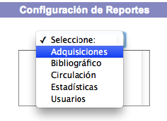
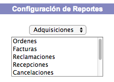
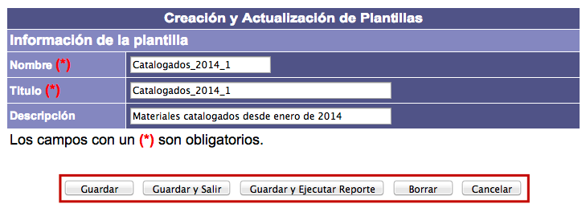
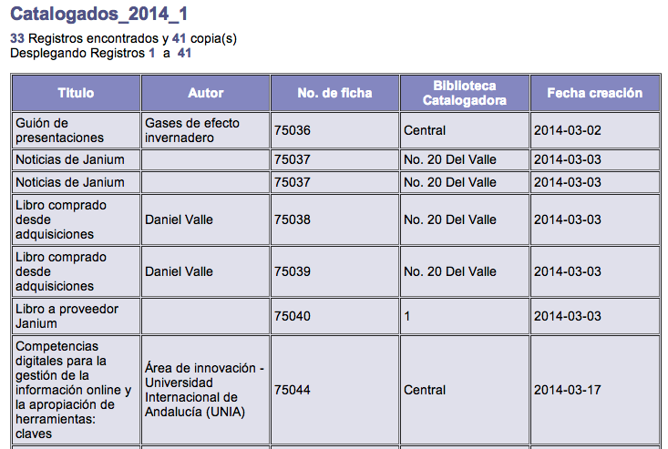
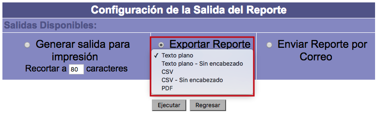
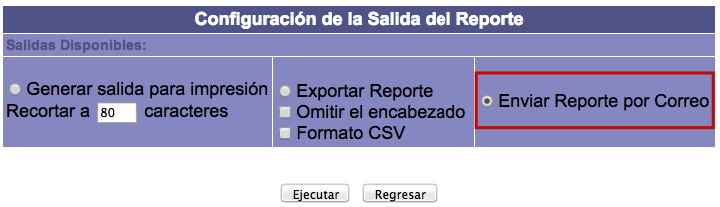
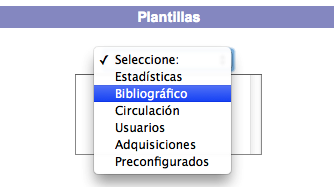
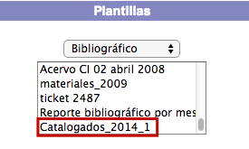
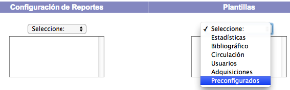

La misión principal de este módulo es permitir el diseño de informes que sirvan para organizar y presentar la información contenida en la base de datos del sistema Janium, aplicando un formato determinado a los datos para mostrarlos de una manera visualmente atractiva y fácil de interpretar por los usuarios. De esta forma, los reportes confieren una mayor utilidad a los datos almacenados por la institución.
Pantalla principal
En el caso particular de este módulo, tras el proceso de identificación previo, la pantalla principal que se presenta es la siguiente:

Barra de herramientas
Este elemento se presenta en primer plano al acceder a algún tipo de reporte, sea a través de Configuración de reportes o de Plantillas. El despliegue de las opciones que lo componen varía dependiendo de cual se esté ejecutando en ese momento.
A continuación, se describen en detalle las opciones de la barra de herramientas:
-
Inicio: permite acceder a la pantalla principal del módulo.
-
Campos: permite agregar o eliminar campos del reporte.
-
Orden: permite configurar los criterios de ordenación de los resultados del reporte por campos.
-
Filtro: permite establecer los filtros necesarios para depurar los datos obtenidos en el reporte.
-
Plantilla: permite guardar el diseño de reporte creado para ser usado en el futuro.
-
Salida: permite exportar los resultados del reporte.
Configuración de reportes
Elección del tipo de reporte
Haciendo clic en la lista desplegable de esta opción se muestran las áreas sobre las que puede llevarse a cabo la consulta, para seleccionar una de ellas.

Después de lo anterior, el sistema puede desplegar un listado de categorías asociadas al reporte elegido, de nuevo para seleccionar una de ellas, o bien, dar paso directamente a la siguiente pantalla del proceso.

Selección de campos
Con el tipo de reporte ya elegido, es necesario añadir los campos que se desean visualizar en la consulta. Esto se hace seleccionando los campos a incluir en la sección Todos los campos y, a continuación, haciendo clic en el botón Agregar campo (o Eliminar campo, si se quiere quitar alguno de ellos). También pueden usarse los botones Agregar todos los campos y Eliminar todos los campos, si se quieren añadir o quitar todos los campos de manera global.
{kind=link}
{kind=link}
Además, usando las flechas habilitadas para ello, se puede determinar la posición o lugar en el que van a aparecer los campos dentro del reporte.
{kind=link}
En este momento también es posible establecer el tipo de tratamiento que el sistema va a aplicar a los resultados, aunque esto puede hacerse más adelante de igual forma. Para ello, hay que hacer clic en la lista desplegable situada en la parte derecha. Existen dos variantes en este sentido:
-
Listar: escogiendo esta opción, el sistema va a presentar todos los resultados detallados en una lista completa.
-
Contar: escogiendo esta opción, el sistema va a presentar los resultados como una cuenta de registros agrupada por cada uno de los resultados encontrados.

Para continuar con el proceso, hacer clic en la opción Orden de la barra de herramientas del módulo.
Asignación de criterios de orden
El siguiente paso es establecer las reglas de ordenación por campos que van a seguirse. Esto se hace eligiendo los campos a ordenar en la sección Campos seleccionados y, a continuación, haciendo clic en el botón Agregar orden (o Eliminar orden, si se quiere quitar alguno de ellos).

Con los campos ya elegidos, se debe decidir qué criterio de ordenación de resultados va a aplicarse para cada uno de dichos campos: Ascendente o Descendente. Este criterio puede ser cambiado usando el botón Modificar orden.

Además, como en la sección anterior, aquí vuelven a presentarse las flechas para determinar la posición o lugar en el que van a aparecer los campos en el reporte, así como la lista desplegable para establecer el tipo de tratamiento (listar o contar), que aquí mantiene el valor ya señalado previamente.
{kind=link}
Para continuar con el proceso, hacer clic en la opción Filtro de la barra de herramientas del módulo.
Aplicación de filtros
En esta fase van a definirse las condiciones específicas de restricción que van a afectar a los resultados de la consulta. Esto se hace, en primer lugar, eligiendo los campos a filtrar en la sección correspondiente de la parte izquierda de la pantalla.

Después, se debe introducir en el campo de texto el valor concreto, relacionado con el campo seleccionado, que va a formar parte del filtro. En este sentido, puede consultarse la totalidad de los datos recogidos en la base de datos para el campo elegido haciendo clic en el botón Ver todos los valores.
{kind=link}
A continuación, seleccionar el tipo de filtro deseado de la lista desplegable habilitada para ello.

Los tipos de filtros que se pueden aplicar son los siguientes:
-
= : igual a.
-
< > : distinto a.
-
> : mayor que.
-
< : menor que.
-
> = : mayor o igual a.
-
< = : menor o igual a.
-
Al inicio: el valor o valores introducidos deben aparecer justo al comienzo de la información dentro del campo.
-
Al final: el valor o valores introducidos deben aparecer justo al final de la información dentro del campo.
-
Contiene: la información del campo debe contener el valor o valores introducidos, sea cual sea su posición dentro de la misma.
-
Nulo: en el campo elegido para el filtro no debe existir ningún tipo de dato, tiene que estar vacío.
-
No nulo: en el campo elegido para el filtro debe existir algún tipo de dato, no puede estar vacío.
Finalmente, hacer clic en el botón Agregar filtro (o Eliminar filtro, si se quiere quitar alguno de los incluidos ya. O Modificar filtro, si se quiere cambiar alguno de los parámetros del mismo).
Además, pueden usarse los operadores booleanos AND y OR para establecer cómo van a combinarse los filtros creados.
{kind=link}
Para continuar con el proceso, hacer clic en la opción Plantilla de la barra de herramientas del módulo.
Ejemplos de aplicación de varios filtros y operadores booleanos combinados
Materiales catalogados por la biblioteca Central durante 2015
El primer filtro se mantiene con los parámetros ya explicados. Es decir, el campo Fecha creación, el valor introducido en el cuadro de texto 2015_01–01 y el valor elegido en la lista desplegable > (mayor que).

Para establecer el segundo filtro:
- En la sección Campos a filtrar, elegir el campo Biblioteca catalogadora.
{kind=link}
- Hacer clic en el botón Ver todos los valores y en la ventana emergente que se despliega, buscar el valor Central y seleccionarlo haciendo clic sobre su nombre. El sistema lo introduce automáticamente en el cuadro de texto correspondiente.

{kind=link}
{kind=link}
- En la lista desplegable de tipos de filtros, elegir el valor = (igual a).
{kind=link}
- Hacer clic en el botón Agregar filtro para agregar el filtro a la sección Campos filtrados.
{kind=link}
Sobre los operadores booleanos: el sistema Janium aplica por omisión el operador AND. Por lo tanto, en este ejemplo, las condiciones serían interpretadas como: “buscar aquellos materiales catalogados a partir del día 1 de enero de 2015 Y los catalogados por la biblioteca Central”.

Para cambiar el operador y, por extensión, el tipo de interactuación entre los filtros, se debería hacer clic sobre el segundo filtro definido (en la sección Campos filtrados), a continuación, seleccionar la opción OR y, finalmente, hacer clic sobre el botón Modificar filtro. Con este cambio, las condiciones serían interpretadas como: “buscar aquellos materiales catalogados a partir del día 1 de enero de 2015 O los catalogados por la biblioteca Central”.
{kind=link}

Materiales catalogados “de prueba” por la biblioteca Central durante 2015
El primer filtro se mantiene con los parámetros ya explicados. Es decir, el campo Fecha creación, el valor introducido en el cuadro de texto 2015_01–01 y el valor elegido en la lista desplegable > (mayor que).
El segundo filtro se mantiene con los parámetros ya explicados. Es decir, el campo Biblioteca catalogadora, el valor introducido en el cuadro de texto Central y el valor elegido en la lista desplegable = (mayor que).

Para establecer el tercer filtro:
- En la sección Campos a filtrar, elegir el campo Titulo.

- Introducir el término Prueba en el cuadro de texto correspondiente.

- En la lista desplegable de tipos de filtros, elegir el valor Contiene.

- Hacer clic en el botón Agregar filtro para agregar el filtro a la sección Campos filtrados.

{kind=link}
Las consideraciones sobre operadores booleanos que se mencionan para el primer ejemplo son válidas también para este.
Creación y actualización de plantillas
Esta sección permite guardar los reportes diseñados para su uso posterior, sin necesidad de tener que crearlos de nuevo desde el principio cada vez que se quieran ejecutar. Esto se hace rellenando con la información necesaria los tres campos de texto que aparecen: nombre, título y descripción. En esta sección también pueden modificarse los datos de identificación ya guardados sobre los reportes.

Entrando en detalle, las opciones que se presentan son las siguientes:
-
Guardar: al hacer clic en el botón, se guarda el reporte creado, se genera un mensaje para informar del éxito del proceso y el sistema regresa a la pantalla de creación y actualización de plantillas.
-
Guardar y Salir: al hacer clic en el botón, se guarda el reporte creado, se genera un mensaje para informar del éxito del proceso y el sistema muestra la pantalla de inicio del módulo.
-
Guardar y Ejecutar reporte: al hacer clic en el botón, se guarda el reporte creado, se genera un mensaje para informar del éxito del proceso y el sistema despliega los resultados de la ejecución del reporte.
-
Borrar: al hacer clic en el botón, se genera un mensaje de aviso para permitir el borrado definitivo del reporte.
-
Cancelar: al hacer clic en el botón, el sistema regresa a la sección Campos.

Ejemplo de visualización de reporte ejecutado
Este es un ejemplo de cómo se presenta en pantalla la información del reporte al ser ejecutado por el sistema Janium.

Configuración de métodos de salida
En esta última fase puede elegirse el método y tipo de formato de salida para el reporte seleccionado.
Las opciones disponibles son las siguientes:
- Generar salida para impresión: crea un fichero de texto plano con la información del reporte destinado a ser impreso. Puede definirse la longitud de las líneas de texto del fichero mediante el parámetro Recortar a …… caracteres, indicando la cifra deseada en el cuadro de texto.

-
Exportar reporte: genera un fichero externo con la información del reporte para que sea guardado en el equipo local. Puede definirse que dicho fichero se exporte en los siguientes formatos: texto plano (con o sin encabezado), CSV (con o sin encabezado) y PDF.
Sobre la exportación en PDF:
-
Los resultados de los reportes en este formato aparecen estructurados en forma de tabla.
-
El encabezado de estos reportes corresponde al título indicado por el usuario durante la creación de los mismos.
-
Las páginas de los ficheros aparecen fechadas y numeradas.
-
Es posible utilizar una plantilla prefijada, de manera que el reporte muestre encabezados corporativos, logos, etc.
-

- Enviar reporte por correo: se envía un correo electrónico a la dirección indicada con la información del reporte.


Para llevar a cabo cualquiera de las acciones explicadas, se debe hacer clic en el botón Ejecutar, o clic en el botón Regresar para volver a la sección Campos.

Selección y uso de plantillas
Como se ha visto anteriormente, una vez diseñados, los reportes pueden ser almacenados mediante el uso de plantillas, para que puedan ser ejecutados en el futuro sin tener que crearlos desde el principio cada vez.
Para realizar esta acción, sólo es necesario seleccionar el área dentro de la lista desplegable que nos muestra el sistema y, a continuación, elegir la plantilla correspondiente haciendo clic sobre su nombre.


Este paso permite cargar el reporte seleccionado para poder trabajar con él, bien sea ejecutándolo o modificando sus parámetros para llevar a cabo una nueva consulta a partir del mismo.

Reportes preconfigurados
Este tipo de reportes no pueden ser modificados por los operadores del módulo, sólo ejecutados, ya que son diseñados desde el departamento de Soporte técnico, para responder a las peticiones y solicitudes de las instituciones.
Son reportes que afectan a dos o más módulos del sistema Janium al mismo tiempo, por lo que no pueden ser creados desde el módulo de Reportes. De forma resumida, lo que hacen es ejecutar una orden de lenguaje SQL (query) de manera directa contra la base de datos y mostrar los resultados.
